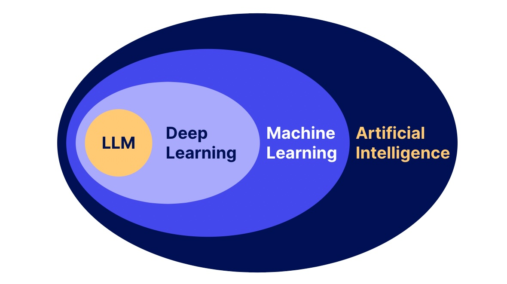
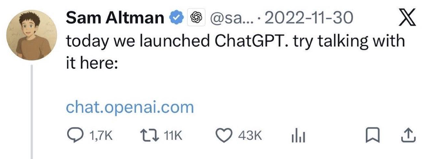
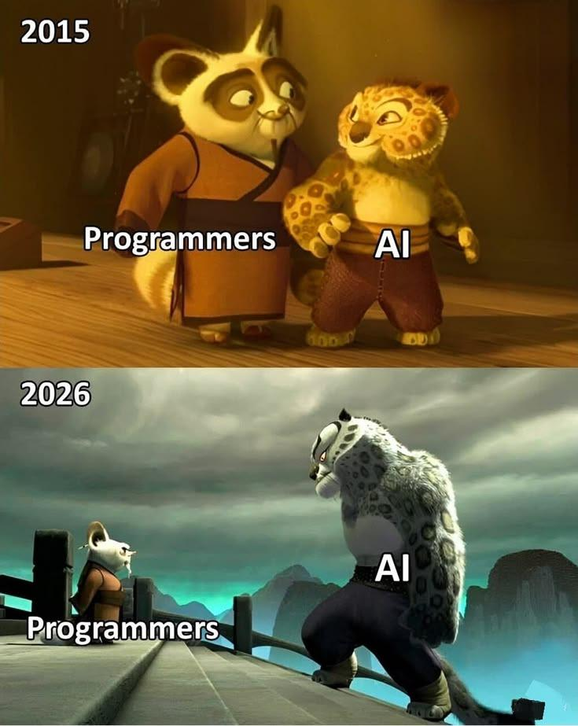

Jour 1 Comprendre & prompter
GEN AI — Oussama AKIR
Comprendre ce qu'est un LLM, mesurer son point de départ, et prompter sans jamais exposer une donnée.
— Sommaire
Trois jours pour apprivoiser l'IA générative
À la fin des 3 jours, vous saurez
- 🧠 Comprendre & cadrer l'IA — ce qu'elle fait, ses limites, RGPD & secret bancaire
- 🎯 Choisir le bon outil & prompter sans jamais exposer une ligne interne
- 🛠️ Maîtriser Copilot (CLI, VS Code, web) — bien au-delà de la complétion
- 🧪 Générer ET valider du code — tests, legacy, migration JSF → Angular
- 🚀 Livrer un POC mesuré, en confiance
Quatre bonnes raisons d'être dans la salle
Sauter avant l'explosion
Le bon moment pour monter dans le train de l'IA, c'est avant qu'il file — pas après.
On finit le formulaire — c'est notre boussole
https://tally.so/r/J9Wrv7
100 % web & GitHub — zéro blocage, zéro dépendance
github.com/akiroussama/gen-ai-training
Comment on en tire le maximum
- 🎯 Jouez le jeu — faites les exercices, même imparfaits. On apprend en faisant, pas en regardant.
- ✋ Posez vos questions — tout le temps, sans filtre. Aucune question n'est bête.
- 🔨 Cassez, testez, recommencez — le bac à sable est fait pour ça.
- 🤝 Zéro jugement — on part d'où on est ; chacun mesure SA progression, pas celle du voisin.
- 💬 Dites-moi quand ça coince — trop vite, trop lent, pas clair : on ajuste en direct.
Se connaître avant de commencer
Vous avez demandé, voilà quand on le fait
| Ce que vous avez demandé | Quand |
|---|---|
| Comprendre ce que fait vraiment un LLM | J1 |
| Prompter sans exposer une ligne interne | J1 |
| Ne plus écrire les tests à la main | J2 |
| Copilot pour de vrai, pas juste la complétion | J2-J3 |
| Migrer du JSF sans tout casser | J2 |
| Livrer un truc qui tourne, et voir mon gain | J3 |
On ne s'arrête pas mercredi soir
Du lundi 1ᵉʳ au mercredi 3 juin, on pose les bases. Mais maîtriser l'IA générative, c'est un apprentissage continu — cette formation ouvre une relation dans le temps.
Rejoindre le canal
Vaswani et al., 2017 — le papier qui a introduit le Transformer, l'architecture derrière tous les LLM d'aujourd'hui. 8 pages qui ont tout changé.
Ouvrir le papier (arXiv) ↗Comment marche un LLM
Pas de maths. Juste le modèle mental qu'il faut pour prompter juste : ce qu'il prévoit, ce qu'il oublie, ce qu'il ne fait pas.
Il ne « comprend » pas : il prédit le mot suivant
Le même mot, deux sens — « avocat »
Suite probable : bien mûr, à la cuillère. → le fruit.
Suite probable : demain au tribunal. → le métier.
La cascade : du général au précis
- IA — une machine imite un comportement intelligent
- Machine Learning — sous-ensemble de l'IA
- Deep Learning — sous-ensemble du ML
- IA générative — sous-ensemble du DL
- LLM — IA générative spécialisée texte

IA : imiter l'intelligence
C'est le terme le plus large. Tout le reste de la cascade vit à l'intérieur.
Machine Learning : on entraîne, on n'écrit pas les règles
Le dev écrit les règles à la main, ligne par ligne.
On fournit des exemples, le modèle déduit les règles tout seul.
Deep Learning : des réseaux neuronaux profonds
IA générative : produire du nouveau
La différence clé : elle ne classe pas, elle ne prédit pas un label — elle crée un contenu qui n'existait pas.
LLM : la générative spécialisée texte
ChatGPT, Claude, Mistral, Gemini : tous des LLM.
Un token, c'est quoi ?
Le texte est d'abord découpé en petites unités appelées tokens. Un token n'est pas toujours un mot entier.
Self-attention : tout le contexte compte
Pour chaque token, le modèle pondère l'importance de TOUS les autres tokens du contexte avant de décider quoi prédire ensuite.
Mauvais contexte → sortie médiocre
Prompt vague, sans rôle ni contraintes. À copier-coller dans GPT-5.5 :
fais une fonction qui calcule des trucs sur les comptes
Bon contexte → sortie exploitable
Même besoin, contexte précis (rôle, objectif, signature, contraintes, format). À copier-coller dans GPT-5.5 :
Tu es développeur Java senior. Écris une méthode calculerInterets(double solde, double tauxAnnuel, int jours) qui retourne les intérêts simples (exemple fictif, aucune donnée réelle). Ajoute la JavaDoc et 2 cas de test JUnit.
Génération autorégressive : un token à la fois
La réponse se construit mot à mot, sans plan d'ensemble préparé à l'avance.
Pré-entraîné, puis affiné — 3 leviers
La fenêtre de contexte
Chaque modèle a une taille maximale de contexte. Au-delà, le texte le plus ancien est tronqué — le modèle « oublie » le début.
un chapitre
~80 pages
≈ Harry Potter 1
une étagère
Ordres de grandeur (1 token ≈ 0,75 mot). Gemini 3.1 Ultra atteint aujourd'hui 2M tokens.
Si la fenêtre est immense, autant tout y déverser ?
À votre avis ?
Non : plus de contexte n'est pas mieux
Le coût se compte en tokens
Réflexe de dev : un contexte minimal et propre, ce n'est pas que de la qualité — c'est aussi du budget.
La coupure des connaissances
Une librairie sortie le mois dernier, une API récente : il peut l'ignorer — ou inventer une version plausible.
Le cutoff des modèles récents (selon l'éditeur)
| Modèle | Cutoff des connaissances |
|---|---|
| Claude Opus 4.8 | janvier 2026 |
| GPT-5.5 | décembre 2025 |
| Gemini 3.5 Flash | janvier 2026 |
Snapshot au 29 mai 2026 · dates communiquées par les éditeurs (cf SSOT-modeles-IA-2026.md).
Pas de déterminisme garanti
Mêmes entrées → toujours la même sortie.
Même question → réponse parfois différente.
La génération est probabiliste : ne comptez pas dessus comme sur un calcul exact reproductible.
Exagérer le hasard : à tester en direct
Prompt à lancer 3 fois de suite dans GPT-5.5 (puis en jonglant : raisonnement profond / normal / une version antérieure) :
Invente un nom de code original pour un projet bancaire, en un seul mot, puis explique-le en une phrase. Sois créatif.
Ce qu'un LLM ne fait PAS
- Garantir l'exactitude de ce qu'il affirme
- Comprendre votre intention au sens humain
- Accéder à votre code interne (sauf intégration explicite)
- Inventer des connaissances qu'il n'a pas vues sans halluciner
- Garantir la même réponse à la même question
- Apprendre de votre conversation au-delà de sa fenêtre de contexte
Yann LeCun & les « modèles du monde »
On vote, puis on en débat
Trois réflexes à garder
- Un LLM prédit du texte, il ne raisonne pas et ne comprend pas.
- Le contexte pilote la sortie — et le coût : gardez-le propre et minimal.
- Coupure des connaissances + pas de déterminisme = relire et vérifier, toujours.
Entraîner un mini-modèle IA, de zéro
Pas de LLM, pas de scikit-learn, pas de PyTorch — Python standard uniquement. En une heure, vous entraînez un vrai modèle qui classe une demande métier CA Titres (fictive) vers la bonne filière.
À la fin, vous pourrez dire : « j'ai entraîné un vrai modèle IA qui lit une phrase métier et propose une filière. »
Petit, mais complet
normaliser, tokeniser, construire_vocabulaire, vectorisersoftmax, entrainer, predire → la précision s'afficheformation-3j-socle-comundi/ateliers/01-panorama-modeles/exercice/starter/On vérifie ensemble
Reformulez avec vos mots — pas de bonne réponse unique, on en discute à voix haute.
Ce qu'il faut retenir
- Un LLM prédit le token suivant — il ne « sait » rien, il complète. D'où les hallucinations.
- La fenêtre de contexte est limitée : au-delà, il « oublie ». Garbage in = garbage out.
- Réponses non déterministes par défaut → on relit toujours, on ne copie jamais les yeux fermés.
Le jour où le grand public a découvert l'IA

30 novembre 2022 : ChatGPT est lancé. 1 million d'utilisateurs en 5 jours — du jamais-vu. Mais l'histoire avait commencé bien avant.
De GPT-1 à aujourd'hui — et ça accélère
En 10 ans, le rapport de force a changé

La bonne nouvelle : ceux qui pilotent l'IA ne sont pas remplacés — ils accélèrent. C'est tout l'enjeu de ces 3 jours.
Panorama des modèles 2026
Trois familles d'architectures
| Famille | Usage typique | Exemples |
|---|---|---|
| Encoder-only | Classification, analyse de sentiment, recherche sémantique | BERT, RoBERTa |
| Decoder-only | Génération de texte, chat, complétion de code | GPT, Claude, Llama, Mistral |
| Encoder-decoder | Traduction, résumé extractif | T5, BART |
Pourquoi tous les assistants de chat et de code sont-ils decoder-only ?
À votre avis ?
Parce qu'ils complètent du texte
Modèle « base » vs « instruction-tuned »
La matière brute, issue du pré-entraînement. Il complète du texte, il ne « répond » pas. Peu utilisable tel quel pour une appli.
Entraîné à suivre des instructions puis aligné. C'est ce qu'on utilise tous les jours : ChatGPT, Claude.ai, le Chat...
De la matière brute au modèle « obéissant »
Qui fait quoi — et où sont les données
| Acteur | Modèles phares | Souveraineté |
|---|---|---|
| OpenAI | GPT-5.5 | US |
| Anthropic | Claude Opus 4.8 | US |
| Gemini 3.5 Flash / 3.1 Ultra | US | |
| Meta | Muse Spark · Llama 4 (open) | US |
| Mistral | Mistral Medium 3.5 | France |
| DeepSeek | DeepSeek V4 (open) | Chine |
Snapshot au 29 mai 2026 · versions les plus récentes (cf SSOT-modeles-IA-2026.md).
Mistral : l'option française
L'open source auto-hébergé : Gemma 4, Qwen, DeepSeek
- Pas d'appel à une API externe : aucune fuite par construction
- Coût d'infrastructure à la place du coût au token
- Pertinent pour un usage interne sensible, sous contrôle de l'équipe
L'auto-hébergé supprime la fuite de données — qu'est-ce que ça coûte en échange ?
À votre avis ?
On échange le coût au token contre le coût d'infrastructure
Faire tourner un modèle ouvert sur son poste
ollama run gemma et le modèle tourne sur la machine. Qwen, DeepSeek, Gemma 4, Llama 4...Le coût, c'est des tokens
Trois cas d'usage banque (fictifs)
calculerStatut(...) ➞ liste de cas de test.Tous fictifs. C'est notre fil rouge.
Quel modèle pour quel besoin ?
Trois réflexes panorama
- Au quotidien : des modèles decoder-only instruction-tuned (GPT, Claude, Mistral, Llama).
- Souveraineté : Mistral (France) ou Llama (open source auto-hébergé) selon la sensibilité.
- Coût : on paie au token, in et out — un prompt propre coûte moins cher.
Le top 10 des modèles, façon cartes joueurs
Une carte par modèle : éditeur, force, meilleur usage, version, cutoff. Snapshot au 29 mai 2026 — le classement bouge vite (≈ 1 modèle frontier par semaine).
Index AA = Artificial Analysis Intelligence Index. « — » = non communiqué publiquement.
coding
- Solide en agentique terminal (workflows multi-étapes)
- Polyvalent : du script jetable au refactor
- Beaucoup d'intégrations et d'outils tiers
- Le LLM le plus utilisé au monde (défaut ChatGPT)
- Moins d'hallucinations que la génération précédente (chiffre annoncé par l'éditeur)
- Écosystème fermé (API / cloud) ; coût sur gros volumes
coding
- Référence du code multi-fichier (Cursor, Claude Code)
- Agents long-cours, excellent suivi d'instructions
- +1 pt SWE-bench vs la version précédente (4.7)
- Au coude-à-coude avec GPT-5.5 au sommet du coding
- Premium : coût plus élevé que les autres
- Écosystème fermé (API / cloud)
coding
- Rapide et économique pour agents + coding
- Multimodal natif : lit code, image, capture d'écran
- Contexte géant (jusqu'à 2M tokens sur 3.1 Ultra)
- Meilleur rapport prix-performance au frontier
- Cloud Google : gouvernance des données à cadrer
- Score coding 3.5 Flash non publié séparément
coding
- Score coding public non communiqué
- Accès web / X en temps réel, utile pour le contexte
- Style direct, ancré dans l'actualité (réseau X)
- Écosystème centré X
- Moins documenté côté benchmarks coding
coding
- Score coding non communiqué
- Multimodal natif + mode multi-agents (« contemplating »)
- 1er modèle de Meta Superintelligence Labs
- Gratuit à l'usage
- Fort sur science / santé, jeune côté coding
Pourquoi tant de scores coding affichent « n.c. » ?
À votre avis ?
Tous les éditeurs ne publient pas SWE-bench
coding
- Codestral : spécialisé code (Java, Angular...)
- Auto-hébergeable (on-prem) : la donnée reste chez vous
- Souveraineté FR / EU — atout données sensibles
- Derrière les frontier US/CN en raisonnement pur
- L'acteur souverain de référence pour la banque
coding
- Fort en coding open (SWE-Pro 60,6 %, Terminal-Bench 69,7 %)
- Multilingue, famille très active
- Open-weight polyvalent et populaire
- Origine CN : gouvernance des données à cadrer
- Itère très vite (3.5 → 3.7 Max en quelques mois)
coding
- 89,6 LiveCodeBench — solide pour de l'open
- Le meilleur open-weight pour coder
- Contexte long
- #4 mondial tous modèles (open ou fermé)
- Origine CN : gouvernance des données à cadrer
coding
- Agentic coding (coding average ~75)
- Open-weight orienté raisonnement
- Fort sur les tâches économiques (GDPval 1535)
- Origine CN : gouvernance des données à cadrer
coding
- 93,5 % LiveCodeBench · 3206 Codeforces Elo
- Licence MIT — vraiment ouvert
- Excellent rapport performance / coût
- Le meilleur perf/coût pour coder en open
- Origine CN : gouvernance des données à cadrer
À connaître aussi
Snapshot au 29 mai 2026 · le paysage open-weight évolue vite.
Le meilleur score coding suffit-il à choisir un modèle pour la banque ?
À votre avis ?
Non : la gouvernance de la donnée passe avant le benchmark
Liens vérifiés le 29 mai 2026.
Même tâche, trois LLM, trois sorties
Objectif de ce chapitre : voir la divergence de vos propres yeux, puis savoir quel outil sortir pour quelle tâche.
Quel outil pour quelle tâche ?
Une spec métier fictive à tester
Méthode fictive calculerStatutDossier(montant, dateDemande, indicateurRisque) — retourne ACCEPTE, REFUSE, EN_ATTENTE ou ETUDE_MANUELLE.
- Si
montant < 0→ REFUSE - Si
montant > 100ket risque élevé → REFUSE - Si 50k–100k, risque moyen, ancienneté > 30 jours → ETUDE_MANUELLE
- Si
montant < 5ket risque faible → ACCEPTE - Sinon → ETUDE_MANUELLE
On valide l'intention avant le code
// Le MEME prompt envoyé aux trois LLM Tu es développeur Java + JUnit 5. Voici la spec d'une méthode fictive. AVANT d'écrire le code des tests, liste les cas de test au format tableau : nom du test, entrée, résultat attendu, raison. Inclus les cas nominaux, les cas limites, et les cas d'erreur. Spec : [coller la spec]
Sur quoi les sorties diffèrent
Couvre les cas nominaux, oublie le seuil exact à 100k (limite haute), format tableau verbeux.
Tente d'écrire le code JUnit malgré la consigne, invente une règle non demandée.
Liste sobre et fidèle, mais moins de cas limites proposés.
Aucun n'est "le bon" dans l'absolu. C'est VOUS qui complétez et tranchez.
Comportements indicatifs — les sorties varient à chaque exécution et selon la version du modèle.
Tâche → outil
LLM généraliste
Assistant code dans l'IDE
LLM généraliste
Lequel choisir — et pourquoi ?
Trois réflexes
On capture le point de départ
Avant de toucher à l'IA, l'équipe pose une baseline honnête : 5 tâches métier, sans Copilot. C'est la photo « avant ».
Pas de mesure, pas de progression visible
Cinq tâches métier, du quotidien CA Titres
AgiosService.calculerAgios (cas fictifs).OrdreBourseService : 3 bugs, 3 améliorations, 1 risque.DossierBean.rechercher() en 3 méthodes atomiques.MobiliteOrchestrator + 1 ticket Jira Given/When/Then.
Une baseline, pas un examen
- Copilot désactivé. On code à la main — c'est volontaire.
- 9 minutes par tâche. Si ce n'est pas fini, on passe à la suivante. C'est normal.
- Chacun seul. Pas d'échange pendant la réalisation, pas de copier-coller d'une tâche à l'autre.
- Auto-évaluation honnête. On mesure vrai, pas pour se rassurer.
Aujourd'hui J1, on ne connaît que la moitié
Mêmes 5 tâches à J3, cette fois avec Copilot. Le Delta entre les deux, c'est le gain réel de la formation.
Comprendre l'IA — au-delà du « next-token »
Vous savez maintenant qu'un LLM prédit le token suivant. C'était le modèle mental de 2023. Voici les 5 concepts de 2026 qui font la différence entre savoir s'en servir et savoir raisonner dessus.
Du « next-token » au modèle qui réfléchit d'abord
« Capitale de la France ? » → réponse immédiate. Le modèle classique, rapide.
Le modèle « pense » sur un brouillon avant de répondre — comme un dev qui griffonne avant de coder.
Quand l'activer — et ce que ça coûte
L'espace de sens — quand les mots deviennent des coordonnées
float[1536] (1536 dimensions chez OpenAI, 3072 pour le gros modèle).voiture/automobile), 0 = sans rapport. La direction porte le sens, pas la longueur.LIKE '%mot%' échoue.roi − homme + femme ≈ reine est en partie un artefact (l'astuce d'exclure les mots d'entrée). Bonne intuition pour comprendre — pas une preuve mathématique.Comment on fabrique un LLM — 4 étapes
Chaque étape ne change pas le réseau, elle le réoriente. Le même réseau, quatre fois recadré.
Un junior qui a tout lu (1) → on lui montre de bons tickets (2) → un senior valide ses PR (3) → la CI dit rouge/vert (4).
Base, instruct, reasoning — et ce que ça change pour vous
| Type | Ce qu'il fait | Comment |
|---|---|---|
| Base | Autocomplète le texte, n'obéit pas | pré-entraînement |
| Instruct | Obéit, ton agréable | + SFT + RLHF |
| Reasoning | Réfléchit, validé par vérificateur | + RLVR |
Pourquoi il invente — avec aplomb
Les 4 parades (bank-safe)
Dense vs MoE, et le multimodal natif
Chaque token passe par tous les neurones (toute l'équipe lit chaque ticket).
Un routeur n'active que 2-3 « experts » par token. Cabinet de spécialistes + standard.
Lire un benchmark sans se faire avoir
- Un bench peut être abandonné par ses propres auteurs — OpenAI a cessé d'utiliser SWE-bench Verified (« ne mesure plus la capacité frontière », contamination)
- Contamination / data leakage — si le test était sur le web avant l'entraînement, le score gonfle (mémorisation, pas raisonnement)
- Saturation — sur MMLU-Pro, top modèles agglutinés ~90 % avec ~13 pts de variance selon la méthode : « 89 vs 88 » est dans le bruit
- Classements Elo (LMArena) ≠ vérité — biais de style (réponses longues, confiantes gagnent) ; loi de Goodhart : la mesure devient une cible
Les sources qui font référence
- Raisonnement — OpenAI — Learning to reason with LLMs
- RLVR / open — DeepSeek-R1 (arXiv 2501.12948)
- Hallucination — OpenAI — Why language models hallucinate
- Lire les classements — Simon Willison — criticism of the Chatbot Arena
Cinq concepts, niveau expert
- Raisonnement — les modèles « pensent » avant de répondre (calcul à l'inférence) ; à activer pour le multi-étapes, ça se paie
- Embeddings — les mots deviennent des coordonnées ; la proximité = le sens ; c'est la fondation du RAG
- Fabrication — lire → obéir → plaire → avoir juste ; le code testable (RLVR) est plus fiable que l'avis flou
- Hallucination — un problème d'incitations (deviner paie) ; parades : abstention, RAG, sources, vérification
- Lire le paysage — MoE/multimodal ; les benchmarks se lisent avec méfiance ; on choisit sur 4 axes + son propre jeu de test
R.O.C.F.E. — l'anatomie d'un bon prompt
Cinq lettres, cinq réflexes. Un prompt structuré donne un résultat contrôlable ; un prompt vague donne du bruit qu'on paye en quota.
Dites au LLM qui il est
// Vague Aide-moi avec du code. // Précis Tu es développeur Java senior, expert tests JUnit.
Un objectif observable et vérifiable
« Aide-moi. »
On ne sait pas quand c'est fini.
« Génère une liste de tests JUnit au format tableau. »
Contexte fictif, minimal, sans fuite
- Donnez juste ce qu'il faut pour comprendre la tâche
- Remplacez toute donnée sensible par un équivalent fictif
- Le LLM web n'a pas besoin de votre métier réel pour coder
Faut-il vraiment remplir les 5 lettres à chaque prompt ?
À votre avis ?
Non : un cadre, pas une checklist obligatoire
Le format force une sortie contrôlable
Donnez les critères de qualité
// Bloc Évaluation dans le prompt Critères : couvre les cas limites, code compilable. Vérifie : chaque test a un assert explicite.
Le même besoin, deux prompts — sur le POC
calculerAgios(BigDecimal solde, BigDecimal tauxJournalier, int joursDebit). Comparez les deux prompts — et ce qu'ils produisent.écris des tests pour ma classe d'agios
BigDecimal, joursDebit = 0 ; parfois un import inventé. Plusieurs allers-retours.
Tu es dev Java 17 + JUnit 5. Liste les cas de test (AVANT le code) pour calculerAgios(BigDecimal solde, BigDecimal tauxJournalier, int joursDebit) : BigDecimal. Format tableau : nom | entrée | attendu | raison. Couvre solde 0, négatif, arrondi, joursDebit 0.
4 prompts qui échouent — et le correctif
Demander direct, sans exemple
Tu es développeur Java. Génère une méthode qui valide un email. Format : code seul, pas de commentaires.
Donner 2-3 exemples du format attendu
Tu es développeur Java. Génère une méthode de validation. Exemple 1 - email : public static boolean isValidEmail(String s) { ... } Exemple 2 - téléphone FR : public static boolean isValidPhoneFr(String s) { ... } À toi : validation de RIB français (structure FR + 23 car.).
Quand utiliser quoi ?
Tâche standard où le LLM connaît déjà la forme. Rapide.
Dès qu'on veut imposer un style précis et répétable.
Vote — puis on en débat
Faire raisonner étape par étape
Identifie le bug en raisonnant étape par étape : 1. Lis le code 2. Liste les hypothèses implicites 3. Ce qui peut planter 4. Conclus : où est le bug ?
Le bon format selon l'usage
| Format | Quand l'utiliser |
|---|---|
| JSON strict | Parser dans une appli Java / Spring |
| Tableau markdown | Comparaison, checklist |
| Liste numérotée | Plan d'action, étapes |
| Code bloc | Génération de code |
| Sections nommées | Revue : Risques / Tests / Questions |
Vote — format de sortie
1 prompt précis > 10 prompts vagues
Chaque prompt consomme du quota. Un prompt structuré touche juste du premier coup : moins de tokens, moins de coût, moins de fatigue.
Prompter sans jamais fuiter
Trois techniques d'anonymisation à appliquer avant d'envoyer quoi que ce soit à un LLM web.
Du prompt risqué au prompt sûr
Placeholders & pseudonymisation
client Dupont, ISIN FR_DEMO_0001, 1 200 titres
CLIENT_X, ISIN_PLACEHOLDER, QTE = N
Abstraction du cas
- « Un écran qui passe un ordre de bourse » → « un formulaire qui valide une commande avec quantité et code produit »
- Le bug, la logique, la structure restent identiques
- Aucun terme métier sensible ne sort de la banque
Extraction du pattern sans le secret
// Au lieu d'envoyer tout le service avec les données réelles : « Quelle regex valide une chaîne de 12 caractères alphanumériques en majuscules ? » // Le pattern résolu, vous le recâblez vous-même en interne.
Placeholders, abstraction, extraction : laquelle choisir ?
À votre avis ?
Les trois se combinent, selon ce qui fuite
Écran « ordre de bourse » — avant / après
Trois réflexes à garder
- R.O.C.F.E. — un prompt structuré touche juste du premier coup et économise le quota
- Few-shot & format — imposez le style par l'exemple, forcez une sortie parsable (JSON)
- Bank-safe d'abord — pseudonymiser, abstraire, extraire le pattern AVANT d'envoyer quoi que ce soit
On vérifie ensemble
Reformulez avec vos mots — pas de bonne réponse unique, on en discute à voix haute.
Ce qu'il faut retenir
- R.O.C.F.E. = Rôle, Objectif, Contexte, Format, Évaluation. Un cadre, pas une formule magique.
- Le Contexte et le Format sont ce qui change le plus la qualité de la sortie.
- Un bon prompt est itératif : on affine, on ne vise pas le « one-shot » parfait.
Le cadre bancaire
Les 5 réflexes de confidentialité
- Pas de code dans les LLM web.
- Pas de logs, tickets ni données réels.
- Pas de secrets, clés API ni identifiants.
- Pas d'architecture interne détaillée.
- Toute sortie IA est relue, testée et contextualisée avant usage réel.
Art. L511-33 CMF
Tout établissement est tenu au secret professionnel sur les informations confidentielles de ses clients. Concrètement, pour un dev :
- Jamais de numéro de compte, nom de client ou transaction dans un LLM externe.
- Jamais de schéma de base de données avec des données réelles.
- Jamais de code qui afficherait des données client soumis à un LLM.
Ce que prévoit la loi
Ces sanctions, c'est l'établissement ou le dev qui les prend ?
À votre avis ?
Les deux : la responsabilité est aussi personnelle
Plausible mais faux
Trois causes principales :
- Le modèle prédit ce qui « ressemble » à une bonne réponse, sans vérifier.
- Il n'a pas le contexte nécessaire, mais ne le dit pas.
- Les données d'entraînement contiennent des erreurs.
L'API Java qui n'existe pas
// On demande au LLM d'utiliser cette méthode : String encoded = String.encodeBase64(input); // Problème : String.encodeBase64() N'EXISTE PAS dans le JDK. // Le LLM va souvent inventer une signature plausible, // avec assurance, comme si elle était réelle.
Trois réflexes de vigilance
Une donnée personnelle dans un prompt
Le RGPD s'applique dès qu'un prompt contient une donnée à caractère personnel (DCP) :
- Nom, prénom, email, téléphone d'une personne identifiable.
- Identifiant client unique, adresse IP, cookies traçants.
- Données sensibles : santé, opinion politique, religion (art. 9 RGPD).
Quatre niveaux de risque
| Catégorie | Exemples | Obligations |
|---|---|---|
| Inacceptable | Notation sociale, manipulation cognitive | Interdit |
| Élevé | RAG sur données clients, scoring, RH | Conformité + journal + supervision humaine |
| Limité | Chatbots, IA générative, GitHub Copilot | Transparence (l'utilisateur sait que c'est une IA) |
| Minimal | Anti-spam, recommandations vidéo | Aucune obligation spécifique |
Le prompt est-il légitime ?
Trois garde-fous
On vérifie ensemble
Reformulez avec vos mots — pas de bonne réponse unique, on en discute à voix haute.
Ce qu'il faut retenir
- Jamais de donnée client, de secret ou de nom dans un LLM web — on anonymise, on généralise.
- Un schéma ou un exemple factice marche aussi bien qu'une vraie donnée pour obtenir de l'aide.
- En cas de doute : RGPD + secret bancaire priment sur la productivité. Le réflexe se prend maintenant.
Deux ateliers, une règle : zéro fuite
Atelier 02 (no-paste, individuel) puis TP2 (bibliothèque de prompts, en binômes). Tous les exemples sont fictifs : aucune donnée CA réelle.
Prompter sans fuite — la consigne
Les 4 étapes
Choisissez un scénario fictif
- Une validation front Angular incohérente avec la validation back Java.
- Un écran JSF legacy qui mélange affichage et règles métier.
- Une stack trace qui signale une erreur de conversion de date.
- Un endpoint REST qui renvoie parfois une 500 après une modif.
- Une méthode Java devenue trop longue et difficile à tester.
Bibliothèque de prompts — la consigne
Le canevas R.O.C.F.E.
Le « C — Contexte fictif », concrètement, on y met quoi sans rien fuiter ?
À votre avis ?
La signature et les symptômes, jamais le code interne
Les 3 cas obligatoires
calculerAgios(...) avant le code.tableau JSON
compréhension
code + README
3 prompts bank-safe à réutiliser
// Tests avant code — on liste avant de générer Avant de générer du code, liste les cas de test nécessaires pour ce comportement fictif. Réponds en tableau : nom, entrée, attendu, raison.
// Diagnostic sans code — je décris, je ne colle rien Tu es expert diagnostic Java web. Je décris un problème fictif, sans code interne. Checklist en tableau : cause, indice, test, correction.
// Angular cross-field — cas absent des built-in Tu es expert Angular reactive forms. Écris un ValidatorFn : au moins UN champ sur N renseigné. Retourne un ValidationErrors parlant.
Ce prompt est-il bank-safe ?
Trois réflexes
Le déclic vibe coding
Ce matin, on a vu que les LLM expliquent du code et proposent des tests. Cet après-midi, on passe au cran d'au-dessus : ils génèrent une appli complète depuis une simple description.
C'est quoi le « vibe coding » ?
- On décrit ce qu'on veut, le LLM produit le code complet
- On copie, on teste, on itère — sans entrer dans le détail
- Le réflexe clé : décrire l'intention, pas l'implémentation
Un prompt, une appli qui tourne
Génère une page HTML/CSS/JavaScript en un seul fichier (sans dépendance externe) qui implémente un convertisseur d'unités EUR vers USD et inversement. Taux : 1 EUR = 1.08 USD (fictif). UI propre, responsive, sans framework. Tout dans un seul <html>.
La consigne du TP — 30 minutes
- Une idée simple : calculatrice, todo, convertisseur, timer, petit jeu
- Pas la stack que vous connaissez : si vous n'avez jamais touché HTML/JS, c'est parfait
- Mode « Accept All » : on copie-colle, on teste, on itère — le vibe coding pur
- Accept All ne vaut que sur du jetable / exploration ; sur du code POC ou bancaire, les 5 réflexes de validation (J2) s'appliquent
- Quand ça marche, ajoutez UNE feature en redemandant à Claude.ai
Quatre idées d'appli jetable
Tout est en HTML/JS, un seul fichier, sans backend. Données fictives — aucune stack interne CA dans le prompt.
Ce qui a marché
- De la description à l'appli fonctionnelle, sans écrire une ligne soi-même
- Itérer est immédiat : on redemande, on re-teste
- Aucun prérequis HTML/JS pour obtenir un résultat qui marche
Ce qui a foiré
Notez surtout ce que la vitesse vous a fait sacrifier :
- La compréhension de chaque ligne
- La sécurité
- La testabilité
- La maintenabilité
Vibe coding ≠ développement pro
Karpathy le dit lui-même : le vibe coding pur sert au prototypage à faible enjeu. En production, il faut revue, tests et garde-fous.
Fin de journée — on ancre, on respire
Vous n'avez pas à tout retenir. On garde ce qui ancre, on coupe ce qui fait joli. Quelques messages clés, dix réflexes, et un avant-goût de demain.
Quatre choses à emporter ce soir
Les 10 réflexes IA gen pour devs banque
- 1. Un LLM ne comprend pas : il prédit le token suivant
- 2. Une réponse assurée n'est pas une garantie de vérité
- 3. No-paste en 4 étapes : identifier, abstraire, prompter, vérifier
- 4. R.O.C.F.E. pour tout prompt : Rôle, Objectif, Contexte, Format, Évaluation
- 5. Le secret bancaire (L511-33 CMF) s'applique aussi aux prompts
- 6. Le RGPD s'applique aux prompts : pas de donnée personnelle sans base
- 7. L'AI Act EU classe les usages : Copilot = risque limité, RAG clients = élevé
- 8. Demander un format de sortie rend la réponse vérifiable
- 9. Refuser une réponse séduisante mais non vérifiable : le test protège
- 10. Copilot dans l'IDE : OK, contexte local. LLM web : abstraire d'abord, toujours
Ce qui vous reste à digérer
Une chose à tester ce soir, en une phrase. Pas un projet : un essai. Vous la ramenez demain matin, créneau 1.